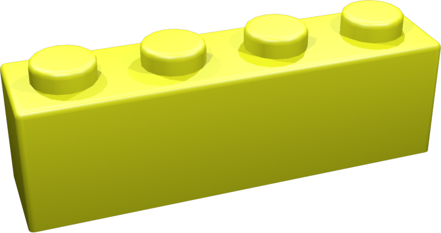
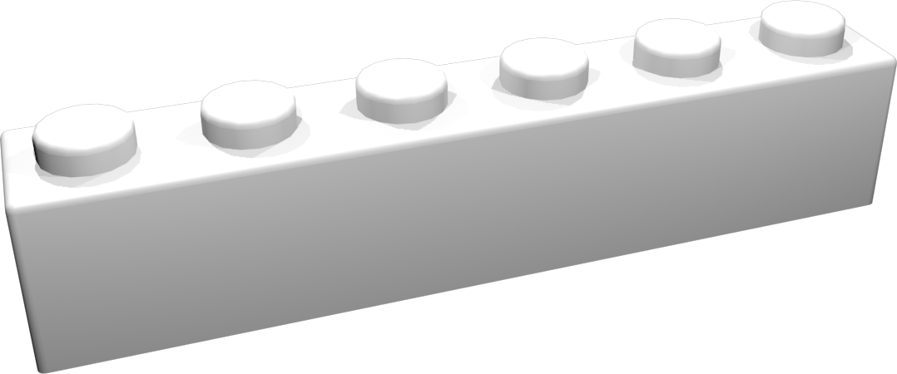
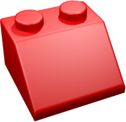
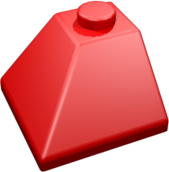

Mon terrain s'étend sur x u²,
il est cloturé d'un mur de u de haut,
avec un portail à l'abcisse .
Ma maison a comme dimensions : u x
u, elle est placée en (,). Elle a :
- Une porte en façade à u du pignon gauche.
- Une fenêtre en façade à u du pignon gauche.
- Une fenêtre sur le pignon de gauche à u de la façade.
Mon jardin contient fleurs.
| x | x | ||||
|  | x |  | x | ||
| x |  | x | |||
| x | x | ||||
|  | x | x | |||
| x | x | ||||
| x | Brique 1x1 | x |
Afficher les ouvertures.
Replay: